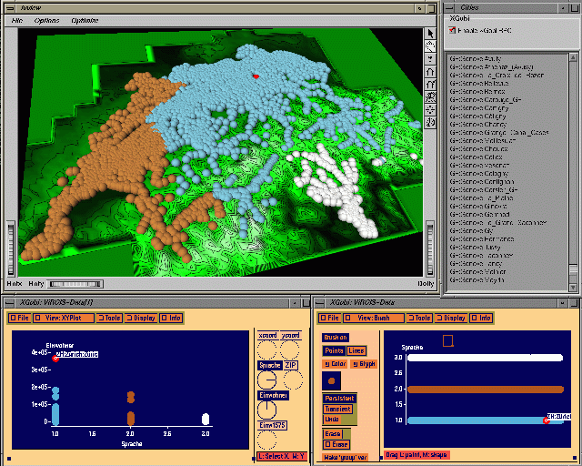
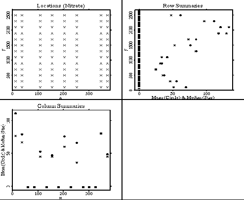
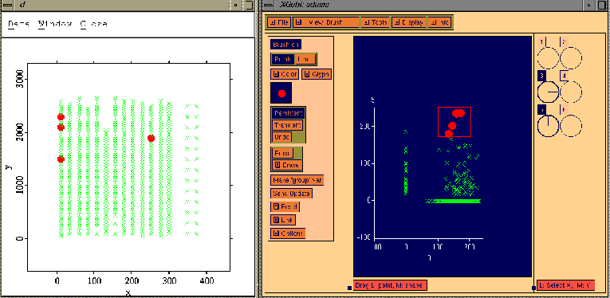

|
Primary Instructor: Dr. Jürgen Symanzik Office: Lund 325 Phone: 797-0696 e-mail: symanzik@sunfs.math.usu.edu http://www.math.usu.edu/~symanzik/ |
Second Instructor: Dr. Kevin Hestir Office: Lund 220 Phone: 797-2826 e-mail: hestir@sunfs.math.usu.edu http://www.math.usu.edu/people/hestir.html |
|
 |
This 3 Credit class will provide a first insight into
applied spatial statistics. We will use a lot of computer
software and practical examples to provide a basic understanding
of existing tools and solutions for spatial statistics.
|
|
As a prerequisite, this class requires basic statistical
knowledge as taught in Stat 3000. Having some working experience
with S-Plus (or any other statistical package) or ArcView
(a Geographic Information System) would be beneficial. This
class should be open to everyone in Statistics, Natural Resources,
Geology, Agriculture, Family Life, and everybody else who is working with
spatial statistical data.
Please contact us in person, by phone, or by e-mail in case of any question. |
 |
|
 |
An organizational meeting will be held on
Monday
8/28/00 at 4pm in room 315 in Lund Hall. If you
cannot attend this first meeting but would like
to take this class, please let us know by e-mail
before 8/28/00 which days and times will work for you as
regular meeting time.
If you want to register before the first meeting, the index number for this class is 19925. |